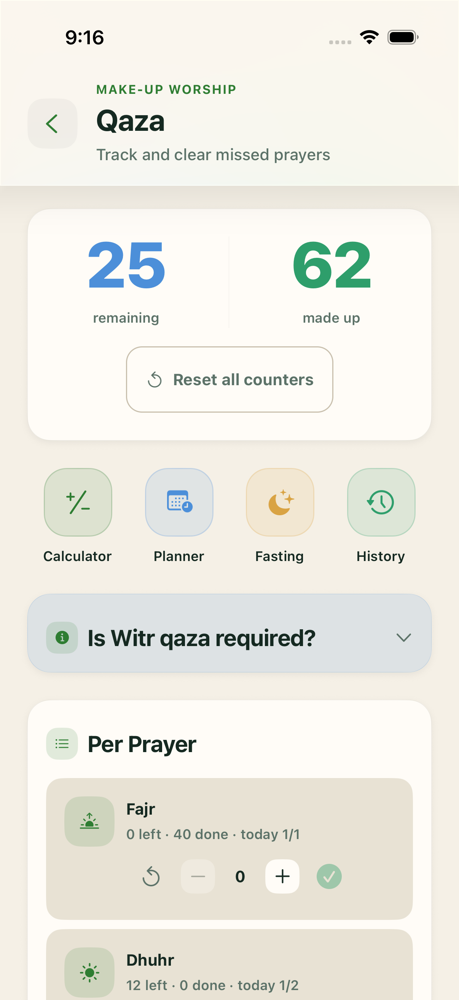
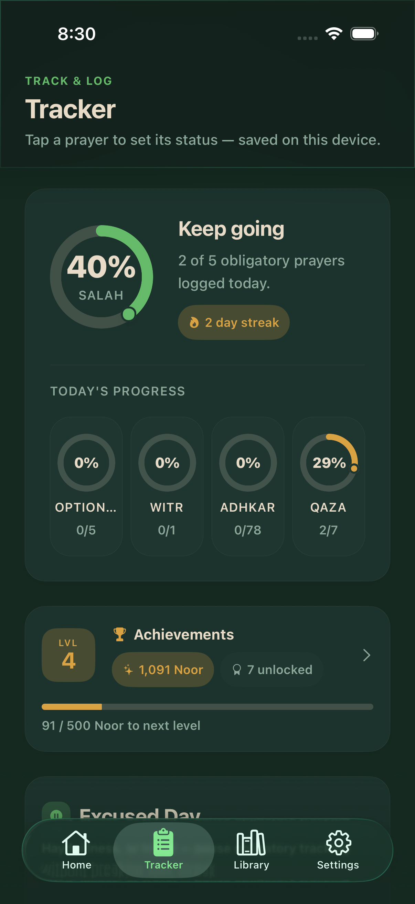

Free · offline-first · no ads
Salah · Qaza · Zikr
Never lose count of what matters most.
Every fard, every missed prayer, every tasbeeh — counted, remembered, and turned into steady progress you can see.
Prayer tracker
Log the five daily prayers plus witr and sunnah in one tap — with streaks, a progress ring, and a full prayer history calendar.
Qaza, made simple
Per-prayer counters, a lifetime estimate calculator, and a daily pace planner that quietly clears years of missed prayers.
Tasbeeh & adhkar
A hands-free counter for any zikr, plus 54 authentic adhkar — morning & evening, before & after salah — with favorites.
History & statistics
Daily goals, charts, and achievements — see your consistency grow week by week.
Reminders that respect you
Prayer, zikr, qaza, and Friday reminders — all opt-in, never noisy.


5 + witr
Daily prayers tracked
54
Authentic adhkar
∞
Tasbeeh counter
23
Languages
Download free. No account needed.
Start as a guest in seconds — or sign in to sync across your phone, tablet, and the web.
munibtracker.app

App Store
iPhone & iPad

Google Play
Android